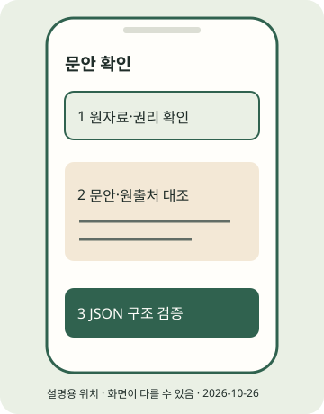

(실습) 실습편 / 3
(실습) 3. 소재 고르기와 웹 채팅 문안
합성 연습 또는 본인 자료의 문안을 검증한다.
2026년 10월 조사 기준 · 확인일 2026-10-26 · 근거: PRAC-25 · E2E 한눈에 보기
진행 기록은 자바스크립트를 켜면 이 브라우저에 저장합니다.
이 실습의 흐름
실습 2의 output/first-post를 계속 사용합니다. 실제 자료로 바꿀 때는 아래 별도 경로를 선택합니다. 이 페이지의 명령은 네트워크를 호출하지 않습니다.
실제 자료로 바꾸기: 새 로컬 피드 만들기
합성 연습을 한 번 마친 뒤 본인 자료로 게시하려면, 아래 XML의 제목·URL·날짜·요약을 본인이 확인한 원자료와 자기 문장으로 모두 바꿔 starter-kit/my-feed.xml에 UTF-8 일반 텍스트로 저장하세요. 예시의 example.org와 안내 문구는 실제 자료가 아닙니다. XML은 시작·끝 태그로 내용을 감싸는 문서 형식입니다. 값에 &를 쓰면 &로 적습니다. 권리·사실이 미확인이면 만들지 말고 보류합니다.
<rss version="2.0"><channel>
<title>내가 확인한 소재</title>
<item><title>직접 확인한 제목으로 교체</title>
<link>https://example.org/replace-with-real-source</link>
<description>내 말로 다시 쓴 짧은 요약으로 교체</description>
<pubDate>원자료의 날짜로 교체</pubDate></item>
</channel></rss>python run_pipeline.py --offline --feed my-feed.xml --output output/my-newsWindows PowerShell에서는 python을 .venv\Scripts\python.exe로 바꿉니다. 새 폴더에서 검수 대기로 멈추면 이후 모든 명령의 output/first-post를 output/my-news로 바꿔 실습 3~7을 다시 진행합니다. 피드를 바꾸지 않고 synthetic만 false로 고치면 실제 자료가 되지 않습니다. 이 XML에는 합성 태그를 넣지 않으므로 실제 확인한 자료일 때만 사용합니다. news.json·copy.json의 원출처와 문장을 직접 확인합니다.

STEP 01 · 오늘의 소재와 권리 기록
오늘의 소재와 권리 기록
지금 하는 일
누구의 어떤 질문을 풀지 원자료와 함께 적습니다.
왜 하는지
문안 생성 전에 사실과 재사용 가능한 범위를 정합니다.
따라 하기
- 처음에는 동봉 합성 피드로 연습합니다. 실제 게시용은 제목·날짜·URL·핵심 사실·이용 조건을 본인이 확인한 자료로 교체합니다. 실제 뉴스처럼 합성 자료를 게시하지 않습니다.
- (이론) 소재·권리 노트에서 허락·인용 범위를 판단합니다. RSS는 업데이트 목록을 전달하는 피드 형식이며 재사용 허락과 별개입니다.
- 한 문장 독자 질문과 원출처를 적습니다. 기사 전체·사진을 무단으로 웹 채팅에 복사하지 마세요.
독자 질문:
원자료 제목 / 날짜 / URL:
내가 확인한 사실:
재사용 가능 범위 / 확인이 필요한 것:이렇게 보이면 성공
독자 질문·원출처·권리 범위가 적힌 소재 메모가 있습니다.
이렇게 보이면?
- 원출처가 없으면 생성 전에 찾으세요.
- 이용 허락이 불분명하면 합성 연습을 유지하거나 권리를 확인한 다른 자료로 바꾸세요.
Windows
이 단계는 Windows와 무관한 휴대폰 또는 웹 작업입니다. 휴대폰 OS와 앱 버전의 화면 차이는 공식 도움말로 확인하세요.macOS
이 단계는 macOS와 무관한 휴대폰 또는 웹 작업입니다. 휴대폰 OS와 앱 버전의 화면 차이는 공식 도움말로 확인하세요.STEP 02 · 웹 채팅에 붙여 넣을 문서 만들기
웹 채팅에 붙여 넣을 문서 만들기
지금 하는 일
기존 news.json에서 prompt.md를 만듭니다.
왜 하는지
API 키 없이 사람이 채팅에 전달할 자료를 준비합니다.
따라 하기
JSON은 필드 이름과 값을 큰따옴표·쉼표로 연결하는 데이터 문서 형식입니다.copy.json에 카드·영상·캡션을 함께 담습니다.- 아래 명령은 웹 채팅을 호출하지 않고
output/first-post/prompt.md만 만듭니다. 기존 copy.json은 보존합니다. - prompt.md를 본인이 이용 가능한 웹 채팅에 붙여 넣습니다. 수정 작업이면 현재 copy.json 전체도 함께 제공하고 원출처·합성 표시를 보존하도록 요청합니다. 웹 서비스 버튼·무료 한도는 이 실습에서 확정하지 않습니다.
이렇게 보이면 성공
웹 채팅에 붙여 넣을 프롬프트: …/prompt.md가 출력됩니다. 기존 copy.json이 그대로 있습니다.
이렇게 보이면?
- 무료 이용 한도에 걸리면 기존 오프라인 초안을 직접 편집해도 됩니다. 유료 API는 필수가 아닙니다.
- 채팅에 토큰·비밀번호·민감한 원자료는 넣지 마세요.
Windows
.venv\Scripts\python.exe write_copy.py output/first-post/news.json --mode prompt --template cards --output output/first-post/copy.jsonmacOS
python write_copy.py output/first-post/news.json --mode prompt --template cards --output output/first-post/copy.jsonSTEP 03 · 답변 저장과 구조 검증
답변 저장과 구조 검증
지금 하는 일
전체 JSON을 저장하고 필수 구조를 검사합니다.
왜 하는지
화면에 넣을 필드와 원출처 누락을 먼저 잡습니다.
따라 하기
- 답변의 전체 JSON 객체만 텍스트 편집기에서 copy.json에 저장합니다. 앞뒤 설명과
```울타리는 빼세요. 웹 채팅을 쓰지 않았다면 기존 파일을 직접 편집합니다. - 카드의
title과 본문points, 영상 자막subtitle, 게시 문구caption을 확인합니다. 본문 카드는 body 대신 points를 표시하므로 함께 고칩니다. - 아래 검증을 실행하고 인명·날짜·수치·조건을 원문과 직접 대조합니다. 구조 검사는 사실·저작권 검증이 아닙니다. 수정 뒤 실습 4에서 다시 렌더링합니다.
이렇게 보이면 성공
구조 검증 OK: output/first-post/copy.json (사실 확인은 사람이 해야 합니다)가 출력됩니다.
이렇게 보이면?
- JSON 오류면 큰따옴표·쉼표·코드 울타리를 확인하세요.
- 원출처 또는 합성 표시 오류면 필드를 삭제하지 말고 원자료에 맞게 복원하세요.
Windows
.venv\Scripts\python.exe write_copy.py output/first-post/news.json --validate --output output/first-post/copy.jsonmacOS
python write_copy.py output/first-post/news.json --validate --output output/first-post/copy.json지금 내 손에 있는 것
합성 연습 또는 본인 자료의 문안을 검증한다. 아래 단계 확인을 모두 마쳤는지 E2E에서 다시 봅니다. 선택하지 않은 포맷·심화는 미완료로 남겨도 됩니다.